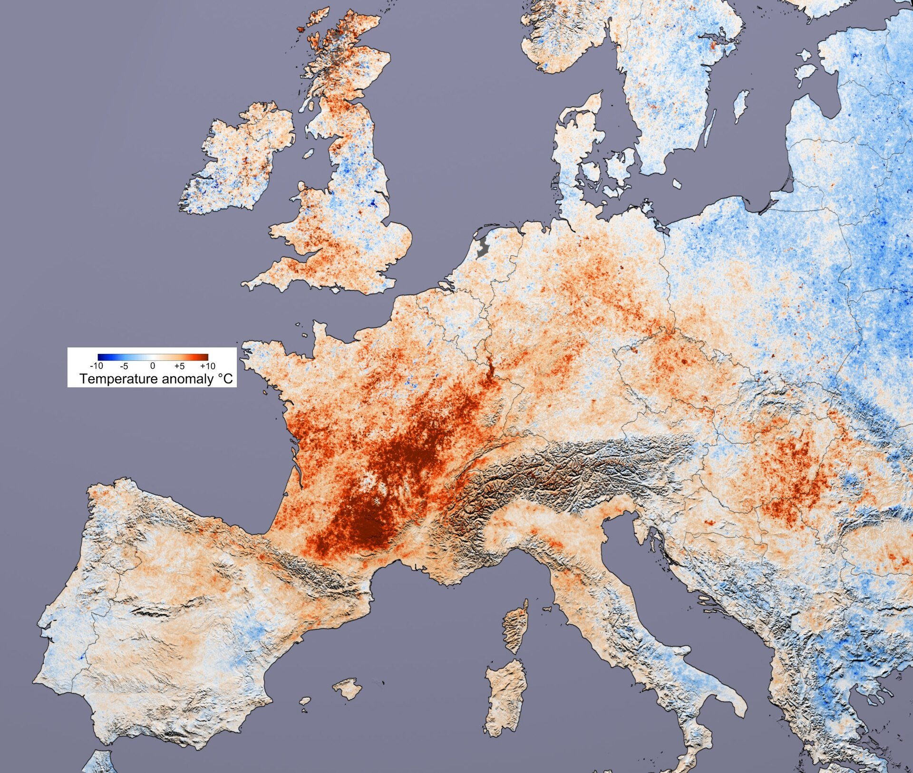

Calor do verão de 2026 pode ter matado mais de 50 mil pessoas em cidades europeias, estima análise
Cerca de dois terços das mortes estimadas se devem à mudança climática causada por humanos, segundo a London School of Hygiene & Tropical Medicine e o Imperial College London. São estimativas de modelo, não uma contagem de óbitos.

O verão de 2026 teve o maior número estimado de mortes por calor em cidades europeias desde 2000: mais de 50 mil, em 854 áreas urbanas de 27 países da União Europeia, do Reino Unido, da Noruega e da Suíça. Cerca de dois terços dessas mortes, segundo a análise, são atribuíveis à mudança climática causada por humanos. As áreas analisadas reúnem cerca de 40% da população dos 30 países.
A análise foi liderada pela London School of Hygiene & Tropical Medicine (LSHTM) e pelo Imperial College London. Clair Barnes, do Imperial (clima e eventos extremos), assina como primeira autoria. Pierre Masselot, da LSHTM (estatística e epidemiologia), e Garyfallos Konstantinoudis, do Grantham Institute do Imperial, também assinam. O relatório se chama, em tradução livre, "Mortalidade urbana relacionada ao calor atribuível à mudança climática de origem humana na Europa no verão de 2026".
Os números
O total de 2026 quase dobra o de 2022 (cerca de 29 mil mortes) e o de 2003 (cerca de 28 mil). Quase um terço das mortes ocorreu entre 17 de junho e 1º de julho, quando a temperatura média diária ficou mais de 5 °C acima da média de 1991 a 2020. O sul e o oeste da Europa tiveram as maiores temperaturas e taxas de mortalidade; no oeste, a anomalia foi de cerca de 2,9 °C acima da média, com dias até 12 °C acima do normal para a estação.
No Reino Unido, foram cerca de 4.500 mortes por calor em 135 áreas urbanas. Os idosos foram os mais afetados, mas cerca de 6.000 das mortes estimadas foram de pessoas com menos de 65 anos.
Como estimaram
Os pesquisadores analisaram as temperaturas diárias de 1º de junho a 31 de agosto nas 854 áreas urbanas, usando observações do tempo e modelos climáticos, e compararam o clima atual (cerca de 1,4 °C mais quente no mundo) com um clima hipotético sem o aquecimento causado por humanos. Aplicaram a relação, já publicada, entre temperatura diária e mortalidade por todas as causas. A diferença entre as mortes estimadas nos dois cenários foi tratada como a mortalidade atribuível à mudança climática.
Um estudo relacionado, na revista Nature Health, aplicou o mesmo método às mesmas cidades de 2000 a 2025: estimou mais de 430 mil mortes por calor no período, e a parcela atribuível à mudança climática subiu de cerca de 40% em 2000 para mais de dois terços em 2025.
O que dizem os autores, e as ressalvas
"Este verão foi mais um lembrete dramático de que a mudança climática é problema de todos", diz Masselot, que acrescenta que está ficando "cada vez mais claro que nossas cidades estão mal adaptadas ao calor crescente" (falas em tradução livre). Os autores recomendam reduzir as emissões de gases de efeito estufa e abandonar os combustíveis fósseis, criar mais áreas verdes e sombra, usar sistemas de alerta de calor, melhorar moradias e unidades de saúde e dar proteção direcionada aos mais vulneráveis.
Os números são estimativas de modelo, não uma contagem de mortes em que o calor foi registrado como causa. Dependem de suposições sobre as populações expostas e sobre a relação entre temperatura e mortalidade tirada de dados históricos. Estimativas anteriores com essa abordagem ficaram parecidas com os números depois divulgados por autoridades de saúde nacionais, segundo a divulgação. E a cobertura é urbana, então a análise não descreve todas as mortes dos 30 países.
Para entender o contexto
Ondas de calor estão entre os eventos climáticos extremos que mais matam, e muitas das mortes não aparecem como "calor" nas certidões: o calor agrava doenças do coração, dos rins e respiratórias, e as vítimas costumam ser idosos e pessoas com doenças crônicas. Por isso os pesquisadores estimam essas mortes comparando o número de óbitos num período quente com o esperado em condições normais, o chamado excesso de mortalidade.
Estudos anteriores já apontaram dezenas de milhares de mortes ligadas ao calor em verões recentes na Europa. Os cálculos de atribuição, que estimam quanto do problema se deve à mudança climática, comparam o clima atual com um mundo sem aquecimento causado por humanos. Em cidades, o efeito é ampliado pelas ilhas de calor, áreas onde asfalto e prédios retêm mais temperatura, um fenômeno também presente nas grandes cidades brasileiras.
Termos úteis
- Excesso de mortalidade: Diferença entre as mortes observadas e as esperadas em um período, usada para medir o impacto de eventos como o calor.
- Estudo de atribuição: Análise que estima quanto um evento extremo foi influenciado pela mudança climática de origem humana.
- Ilha de calor urbana: Área de cidade mais quente que o entorno por causa de concreto, asfalto e pouca vegetação.
Gostou? Receba as próximas.
As notícias internacionais que importam, em português, uma vez por semana.
Assinar a newsletter